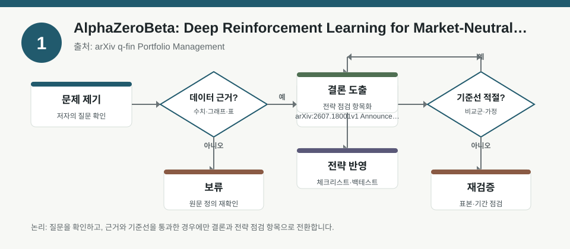
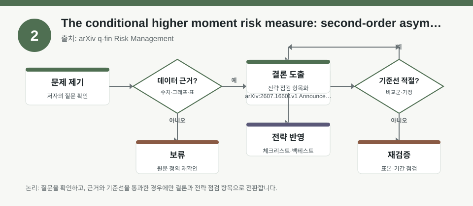
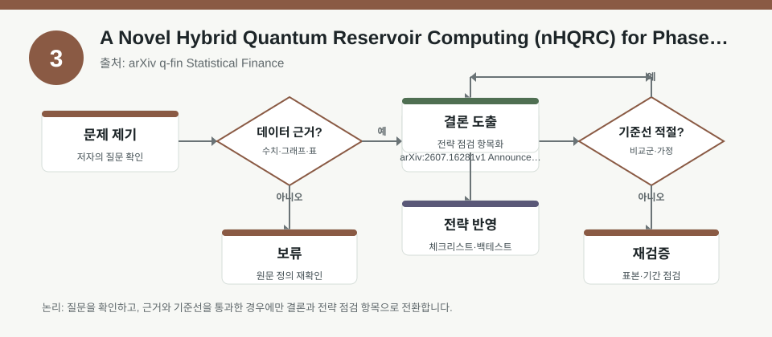

핵심 요약
- 결론: 세 자료 모두 시장중립·꼬리위험·레짐전환을 다루므로, 한국 투자자는 섹터 비중보다 팩터 노출과 변동성·금리·환율 민감도 점검을 우선해야 합니다.
- 원칙: 수치·성능·실증 결과는 메타데이터만으로 단정하지 말고, 표본 구간·거래비용·리밸런싱·레짐 정의를 원문에서 반드시 확인해야 합니다.
주목할 자료
| 번호 | 자료 | 출처 | 원문 | 핵심 내용 | 데이터 포인트 | 리스크/한계 |
|---|---|---|---|---|---|---|
| 1 | AlphaZeroBeta: Deep Reinforcement Learning for Market-Neutral Portfolios | arXiv q-fin Portfolio Management | 원문 보기 | 전통적 팩터모형·볼록최적화의 한계를 보완하려는 시장중립 포트폴리오용 강화학습 접근 | 시장중립, 팩터 노출, 구조적 가정 붕괴, 레짐 전환 | 성과 수치와 거래비용 가정은 메타데이터에 없어 원문 검증 필요 |
| 2 | The conditional higher moment risk measure: second-order asymptotics with FGM contagion | arXiv q-fin Risk Management | 원문 보기 | 조건부 고차모멘트 위험측도를 FGM 의존구조에서 전개해 약한 전염효과를 반영 | 꼬리위험, 고차모멘트, 상관 의존성, 전염효과 | 분포 가정과 점근근사 범위가 필요하며 실무 적용성은 원문 확인 필요 |
| 3 | A Novel Hybrid Quantum Reservoir Computing (nHQRC) for Phase Transition Detection in Non-Equilibrium Dynamical Systems | arXiv q-fin Statistical Finance | 원문 보기 | 비선형 시계열에서 잠재적 상전이를 조기 탐지하려는 하이브리드 양자 리저버 컴퓨팅 제안 | 레짐 전환, 비선형 동학, 조기 경보, 시스템 붕괴 징후 | 양자·하이브리드 계산의 재현성, 데이터 전처리, 비교기준 확인 필요 |
자료별 상세
1. AlphaZeroBeta: Deep Reinforcement Learning for Market-Neutral Portfolios

- 핵심: 시장중립 전략은 방향성 베팅보다 팩터 노출과 헤지 정확도가 성과를 좌우하므로, 레짐 변화에서 구조적 가정이 깨지는지 확인하는 관점이 중요합니다.
- 데이터 포인트: 메타데이터상 전통적 팩터모형과 최적화가 레짐 전환에서 약해질 수 있다는 문제의식이 핵심입니다.
- 리스크: 성과 우위, 거래비용, 슬리피지, 공매도 제약, 리밸런싱 주기는 원문에서 검증해야 합니다.
- 투자전략 반영 예시: KOSPI/KOSDAQ 포트폴리오 점검 시 성장·가치·모멘텀·퀄리티 등 팩터 노출이 과도한지, 원화 약세·금리 상승·변동성 확대 구간에서 헤지 민감도가 어떻게 바뀌는지 체크합니다.
- 실행 예시: 포트폴리오 점검표에 “섹터 편중”, “순베타”, “환율 민감 수출주 비중”, “금리 민감 성장주 비중”, “월별 리밸런싱 시 비용 반영” 항목을 넣어 백테스트 가정과 실제 거래조건을 비교합니다.
2. The conditional higher moment risk measure: second-order asymptotics with FGM contagion

- 핵심: 평균·분산만으로는 부족하고, 조건부 왜도·첨도 같은 고차모멘트와 약한 전염효과가 꼬리위험 해석에 중요하다는 점을 강조합니다.
- 데이터 포인트: FGM 의존구조와 2차 점근전개가 핵심이므로, 상관계수 하나로 대체되는지 여부를 확인해야 합니다.
- 리스크: 약한 전염효과 가정이 실제 금융위기·급락 국면에도 유지되는지, 그리고 비대칭 분포에서 근사 오차가 얼마나 커지는지 검토가 필요합니다.
- 투자전략 반영 예시: 한국 주식 투자자는 반도체·2차전지·인터넷 등 고변동 섹터를 묶어 볼 때 평균 수익률보다 하방 꼬리와 동시 급락 가능성을 별도로 점검하는 체크리스트를 둘 수 있습니다.
- 실행 예시: 스트레스 테스트 항목에 “지수 급락 시 섹터 동조화”, “환율 급등 시 수입원가 민감 업종”, “신용스프레드 확대 시 중소형주 유동성”을 포함해 꼬리위험을 수치가 아닌 시나리오로 점검합니다.
3. A Novel Hybrid Quantum Reservoir Computing (nHQRC) for Phase Transition Detection in Non-Equilibrium Dynamical Systems

- 핵심: 비선형 데이터에서 레짐 전환을 미리 포착하는 것이 핵심이며, 평시 성능보다 전환 국면의 탐지 지연과 오경보율이 더 중요합니다.
- 데이터 포인트: 상전이 탐지, 비평형 동학, 잠재 구조 변화가 주요 키워드이므로 금융시장 레짐 분류로 해석할 때는 입력특성 선택이 중요합니다.
- 리스크: 양자·하이브리드 모델의 재현성, 학습 데이터 누수, 비교 기준 모델, 실시간 적용 비용은 원문 확인이 필요합니다.
- 투자전략 반영 예시: KOSPI/KOSDAQ에서 변동성 급등, 업종 순환, 금리·환율 충격이 나타날 때 레짐 전환 신호를 보조 지표로 활용할 수 있는지 검토하되, 단독 의사결정 기준으로 쓰지 않습니다.
- 실행 예시: 투자 점검표에 “VIX 유사 변동성 지표”, “원/달러 방향성”, “국고채 금리 변화”, “크레딧 스프레드”, “거래대금 급감”을 넣고, 레짐 전환 감지 모델의 오경보율을 사후 기록합니다.
팩터·리스크·포트폴리오 관점
- 핵심: 세 자료를 함께 보면, 팩터 노출 관리, 꼬리위험 측정, 레짐 전환 감지가 시장중립과 포트폴리오 안정화의 공통 축입니다.
- 검수: 모든 결과는 표본 기간, 수익률 정의, 비용·슬리피지, 공매도 가능성, 분포 가정, 전처리 방식, 레짐 라벨링 기준을 원문에서 확인해야 합니다.
정리
- 결론: 한국 투자자 관점에서는 종목 선택보다 먼저 포트폴리오의 팩터·환율·금리·변동성 민감도를 구조적으로 점검하는 접근이 더 유용합니다.
- 다음 확인: 원문에서 백테스트 구간, 거래비용, 리밸런싱 빈도, 꼬리위험 산식, 레짐 정의를 확인한 뒤, 본인 점검표에 반영할 항목만 추출해야 합니다.